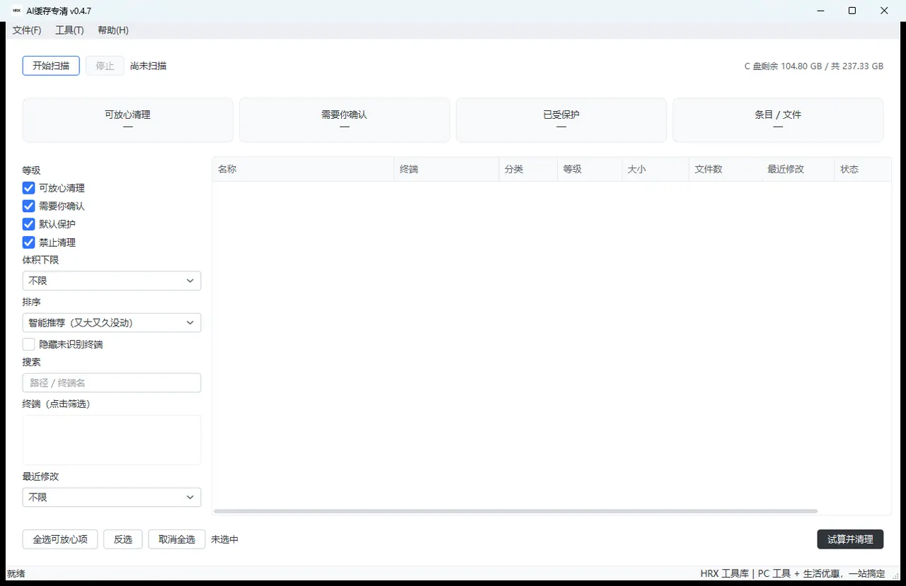

AI缓存专清
AICacheSweeper · AI缓存清道夫
AI缓存专清是一款专门清理 AI 编程终端和包管理器残留的 Windows 桌面工具。

这是什么
AI缓存专清是一款专门清理 AI 编程终端和包管理器残留的 Windows 桌面工具。它会把 Claude Code、Codex、Cursor、ZCode、Kimi、豆包、Qoder、TRAE 等 AI 工具留下的缓存、日志、会话历史、配置和更新包列成一张清单，按安全等级分类，让你先看清再决定删什么。
它适合经常使用 AI 编程工具、C 盘空间越来越紧张，但又担心“删错文件”的人。软件坚持三条原则：只清理本机、只读文件名/大小/修改时间（不打开文件内容）、不联网。
下载渠道
下载后解压即用，不需要装运行库；软件全程在本机运行，文件不上传。
怎么用
安装
- 拿到
AI缓存专清_v0.3.2.zip后，解压到任意有写入权限的文件夹（不建议放在C:\Program Files这类需要管理员权限的位置）。 - 主程序未做数字签名，Windows 首次运行时可能提示“未知发布者”。点击“更多信息”，再选择“仍要运行”即可。
启动
- 打开解压后的文件夹，双击
AI缓存专清.exe。 - 启动后会看到主界面：
功能详解
扫描本机 AI 终端残留
这个功能做什么：在你不做任何选择的情况下，先把本机 AI 工具留下的缓存、日志、会话、配置和更新包找出来，列成清单。
操作步骤：
- 点击左上角的【开始扫描】。
- 扫描过程中，按钮会变成不可点状态，旁边显示“扫描中…”。如果扫描时间较长，可以点【停止】保留已发现的结果。
- 扫描结束后，四张概览卡和结果表会自动填充。
操作后你会看到：顶部显示“扫描完成”，四张卡片分别给出“可放心清理”“需要你确认”“已受保护”“条目/文件”的合计；结果表按“智能推荐”排序，又大又久没动的条目排在前面。
扫描只覆盖本机固定磁盘上的用户目录和 AppData；映射盘、网络共享盘不会进入扫描范围。遇到没有权限的目录会跳过，不会弹窗打扰你；早于 2010 年的异常时间会被标成“时间未知”，避免被误判成“很久没动”。
看懂 S / A / B / C 四级
这个功能做什么：用四个等级告诉你每个条目“能不能删、删了会怎样”。等级不是装饰，它决定默认勾选状态和后端是否放行。
| 等级 | 含义 | 典型内容 | 默认状态 |
|---|---|---|---|
| S 可放心清理 | 删了只会让工具下次重新生成或重新下载 | 纯缓存、日志、更新包、崩溃记录 | 默认勾选 |
| A 需要你确认 | 删了会影响你的使用记录 | AI 对话历史、会话记录、记忆、待办 | 默认不勾选 |
| B 默认保护 | 删了会改变终端行为 | 配置、技能、命令、插件、MCP 设置 | 默认不可勾选，需在设置里开启 |
| C 禁止清理 | 凭据或程序本体，删了可能无法登录或启动 | 登录令牌、密钥、程序可执行文件 | 永不显示复选框，后端直接拒绝 |
操作步骤：
- 在结果表里看“等级”列，S 是绿色、A 是黄色、B 是蓝色、C 是红色锁标记。
- 想展开某个终端时，点击它左边的三角箭头。
操作后你会看到：展开后能看到该终端下的子项，以及每个子项的等级、大小、文件数和最近修改时间。C 级条目前面没有复选框，只显示锁标记和“禁止清理”。
查看终端明细
这个功能做什么：把某个 AI 工具占用的空间拆开看，判断哪一块最值得处理。
操作步骤：
- 在结果表里展开对应终端，例如
.codex。 - 查看每一行的“分类”“大小”“文件数”“最近修改”“状态”和“说明”。
- 把鼠标停在“名称”或“说明”上，可以看到完整路径和操作建议。
操作后你会看到：同一个终端下的日志、会话、缓存、配置分开显示，大小和文件数各自统计；标记为 C 的凭据会单独列出，提醒你“本工具永不清理”。
筛选、排序与搜索
这个功能做什么：条目多的时候，快速缩小范围，只看你关心的等级、大小或终端。
操作步骤：
- 在左侧“等级”里勾选想看的等级（默认四级全显示）。
- 在“体积下限”里选择 10 MB、100 MB、500 MB 或 1 GB，只看超过该体积的条目。
- 在“排序”里切换“智能推荐”“大小↓”“文件数↓”“最久未修改”等。
- 在“终端（点击筛选）”里点选某个终端，只看它名下的条目。
- 在“搜索”框输入路径关键词或终端名。
操作后你会看到：结果表立即按你的条件刷新；底部“已选”区域只统计当前勾选的条目。清空搜索框或把条件改回“不限”，清单会恢复。
试算并清理
这个功能做什么：在真正删除之前，先给你一份清单，写清要删什么、能回收多少、哪些会归档、哪些会被安全规则拦下。
操作步骤：
- 在结果表里勾选要清理的条目（S 级默认已勾选；A 级需要你自己勾）。
- 点击右下角的【试算并清理】。
- 在确认框里检查：本次清理多少项、估算回收多少、哪些会先归档、哪些不会归档、最大的几项是什么。
- 点击【确认清理】执行；如果不想删，点击【取消】，不会做任何改动。
操作后你会看到：确认框顶部固定显示三条警示，其中第一条明确写着“本次删除不经过系统回收站，文件将被直接移除”。如果选中了 A 级或 B 级，还会追加对应提醒。执行完成后会弹出“清理完成”报告，显示实际释放、估算回收、已删除项数、可还原与不可还原项数。
清理完成后，主界面底部状态栏会显示“完成：实际释放…，删除…项”。如果想看清理后的最新占用，再点一次【开始扫描】即可。
注意：删除不经过系统回收站。S 级不归档，删了不能还原；A 级默认先归档、B 级强制归档，只有已归档并校验通过的条目才能在“清理记录”里还原。
清理记录与还原
这个功能做什么：查看每一次清理的结果，并对已归档的条目执行还原。
操作步骤：
- 点击菜单栏【工具】→【清理记录与还原】。
- 在记录列表里看时间、估算回收、实际释放、条目数、可还原、不可还原和状态。
- 选中一条记录，底部会显示记录文件名和详情；如果该记录有可还原项，【还原选中记录（仅已归档项）】按钮会变为可用。
- 点击还原，软件会把归档副本放回原路径；如果原路径已有同名文件，会加
.restored-时间后缀，不会覆盖现有文件。
操作后你会看到：还原成功的条目回到原位置；未归档的条目在记录里显示“不可还原”，不会给出能点的还原按钮。
为什么“实际释放”有时比“估算回收”小，甚至显示 0 B？因为归档会先复制一份到归档区，复制占用的空间和删除释放的空间会相互抵消。实际释放始终以磁盘剩余空间的前后差值为准，软件不会拿估算值冒充。
瘦身建议
这个功能做什么：根据扫描结果给出只读建议，告诉你哪些终端可能不再使用、哪个文件特别大、哪些缓存占用高。它不会自动删除或修改任何东西。
操作步骤：
- 先完成一次扫描。
- 点击菜单栏【工具】→【瘦身建议】。
- 在列表里浏览建议；选中一条可以在下方看到详细说明。
- 如果建议的动作是“在列表里选中”，点击后弹窗会关闭，并回到主窗口把对应条目勾选出来；是否清理仍由你走一次完整的确认流程。
操作后你会看到：每条建议只说明问题和建议动作，没有“立即清理”“自动执行”按钮。建议的触发条件都来自扫描到的事实，例如体积、最近修改时间、文件数；时间未知的目录不会参与“久未使用”判断。
SKILL / AGENT 盘点
这个功能做什么：把散落在各终端目录里的技能、命令、插件、MCP 配置和 AGENTS.md/CLAUDE.md 等规范文件列清楚，让你知道自己的“能力资产”在哪里、占多少。它只盘点，不清理。
操作步骤：
- 先完成一次扫描。
- 点击菜单栏【工具】→【盘点 SKILL/AGENT 文件】。
- 展开分组查看每一处的位置和大小。
- 选中一条，点击右侧【打开所在文件夹】可以在资源管理器里定位。
操作后你会看到：分组按技能目录、自定义命令、插件目录、MCP 配置、AGENTS.md 规范、.cursorrules 等归类；底部汇总发现多少处、多少文件、占多少空间。
设置
这个功能做什么：调整清理行为、扫描参数，并查看归档区、清理记录和扫描缓存的占用。
操作步骤：
- 点击菜单栏【工具】→【设置…】。
- 在“清理行为”里可以开关“清理会话历史/配置前先归档一份”，选择归档保留时长（3/7/14/30 天），以及是否允许清理 B 级。
- 在“扫描”里可以设置并行线程数、默认排序、是否把可移动盘也纳入扫描。
- 在“本机占用”里查看归档区、清理记录、扫描缓存的占用，并可清理过期归档。
- 点击【保存】生效；点击【取消】不修改。
操作后你会看到：设置立即写入，下次清理按新设置执行。软件不提供“跳过确认”“定时自动清理”开关；删除方式固定为直接删除、不经过回收站。
B 级默认不可勾选。只有在设置里打开“允许清理 B 级”后，B 级条目才可勾选；删除前仍会强制归档，并给出专项提醒。C 级不受任何设置影响，永远不可删。
导出清理报告
这个功能做什么：把最近一次清理的结果导出成 JSON 和 CSV，方便留档或做表。
操作步骤：
- 先完成一次清理。
- 点击菜单栏【文件】→【导出报告…】。
- 选择保存位置和文件名，确认。
操作后你会看到：同一位置会生成一个 .json 和一个 .csv 文件。报告包含路径与统计信息，不包含任何文件正文；CSV 带 UTF-8 BOM，可以直接用 Excel 打开。没有清理记录时，软件会提示“没有可导出的清理记录”，不会生成空文件。
运行环境
| 项目 | 要求 |
|---|---|
| 操作系统 | Windows 10 或 Windows 11（64 位） |
| 安装方式 | 解压即用，无需安装 |
| 权限 | 普通用户权限即可，不需要管理员权限 |
| 网络 | 不需要联网，软件不发起网络请求 |
| 磁盘 | 保留少量空间给归档区；归档会话/配置时会额外占用与待归档内容相当的空间 |
常见问题
- 会不会把我的登录凭据或配置删掉？
-
原因：AI 终端目录里确实混着登录令牌、密钥和程序本体，普通清理工具容易一刀切。
解决：不会。凭据、私钥、程序本体属于 C 级，结果表里只显示、不给复选框，后端也会直接拒绝删除；配置、技能、命令属于 B 级，默认不可勾选，需要你在设置里显式开启，并且删除前强制归档。每次清理的确认框都会把即将删除的内容和警示写清楚。
- 删除后还能从回收站找回吗？
-
原因：本软件采用“直接删除”，不经过 Windows 回收站。
解决：不能从回收站找回。只有 A 级（默认）和 B 级（强制）在删除前会复制到归档区，复制校验通过才会删除原文件；这些条目可以在【工具】→【清理记录与还原】里还原。S 级不归档，删除后无法恢复。确认框里每次都会写明这一点。
- 为什么有一项明明勾选了却没有删？
-
原因：预检发现该条目对应的终端正在运行、文件被其它程序占用、是云端占位文件，或者属于 C 级/网络位置。
解决：确认框和完成报告里的“被安全规则拦下”会列出原因。退出对应终端、关闭占用文件的程序后重新扫描再试；C 级和网络位置无论怎么操作都不会删。
- 为什么“最近修改”显示“时间未知”？
-
原因：该目录里存在早于 2010 年的异常时间戳（常见于厂商写死的占位时间），软件无法判断真实修改时间。
解决：这是正常的保护行为。时间未知的目录不会参与“N 天前”这类按时间筛选的规则，也不会被瘦身建议判成“久未使用”；你可以按大小和内容自行判断是否清理。
- 为什么扫描不到我用的某个 AI 工具？
-
原因：软件内置 43 个终端识别档案；如果某个工具不在档案里，可能只能按保守规则识别，或者暂时扫不到。
解决：可以先把该工具的安装目录和缓存位置反馈给作者，后续规则库更新会补充。未建档的终端即使被识别，也会按保守的 A 级处理，不会默认勾选。
- 需要管理员权限吗？
-
原因：软件只处理当前用户可写区域。
解决：不需要管理员权限，也不会请求 UAC。遇到没有权限的目录会跳过并记录，不影响其它条目。
- 支持网络盘和移动盘吗？
-
原因：网络位置读取可能卡死，而且删除网络上的文件风险更高。
解决：映射盘、网络共享盘（UNC）始终不扫描；可移动盘默认不扫描，可以在设置里勾选“把可移动盘也纳入扫描”，但网络盘不受该开关影响。
- B 级怎么清理？
-
原因：B 级包含配置、技能、命令等能力资产，默认保护。
解决：在【工具】→【设置…】里勾选“允许清理 B 级”，保存后回到结果表，B 级条目才可勾选。删除前会强制归档并弹出专项提醒；如果只是查看，建议使用【SKILL/AGENT 盘点】而不清理。
- 归档会一直占空间吗？
-
原因：归档副本是已清理条目的唯一还原来源，会占用磁盘空间。
解决：默认保留 7 天，可在设置里改成 3/7/14/30 天；也可以在设置的“本机占用”里点击【立即清理过期归档】。清理过期归档后，对应记录会变成不可还原。
- 软件会联网或上传我的文件吗？
-
原因：扫描会话历史时，用户最担心隐私。
解决：不会。软件只读取文件名、大小和修改时间，不打开文件内容；不发起网络请求，也不会上传任何文件。它只在本机处理，不需要联网即可使用。
- 能不能定时自动清理？
-
原因：无人复核的自动删除风险太高。
解决：不提供定时自动清理，也不提供“跳过确认/不再提示”开关。每次清理都必须由你确认。
注意事项
- 删除不经过系统回收站，文件会被直接移除；S 级不归档，删除后无法恢复。
- C 级凭据、私钥、程序本体永远不可删；B 级默认保护，开启后仍强制归档。
- 软件只读文件名、大小和修改时间，不读文件正文；不联网、不上传。
- 归档会额外占用磁盘空间；归档保留期到期或手动清理后，对应条目不可再还原。
- 扫描范围只限本机固定磁盘；网络盘、UNC 路径始终不扫描。
- 清理前请确认对应 AI 终端已经退出，避免文件被占用导致部分条目跳过。
- 本软件按已知路径规则识别与统计，不对删除后的结果负责；重要数据请自行备份。
其它叫法与搜索词
也有人叫它AI缓存清理、缓存清理、清理C盘、AI工具缓存、Claude Code 缓存、AICacheSweeper。
英文名 AICacheSweeper，
程序名 AI缓存清道夫。
想找这类工具时常见的说法：AI 缓存、AI 编程工具、缓存清理、C盘瘦身、磁盘清理、安全分级、归档还原、Skill 盘点、不联网、Codex、Cursor、ZCode。